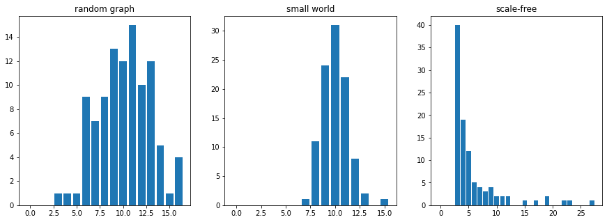

5. スケールフリーネットワーク¶
Barabasi & Albert (1999)は、現実の多くのネットワークの次数の分布がべき乗則に従うことを明らかにしたうえで、ネットワークのでき方がそのような性質を生むことを突き止めました。ここでは、ネットワークは完全に複雑系に関連する現象として扱われ、また、Erdos-Renyi modelとは、全く異なった考えに基づいて生成されています。
成長するネットワーク¶
Barabasi & Albertのネットワークの大きな特徴は、その生成方法で、最初、小さなネットワークがあり、そこに新しいノードが付け加えられていきます。このときの、エッジの作り方が、べき乗分布をつくりだし、それによって、ネットワーク自体の性質が決まるという意味で、これは自己組織化と呼ぶことができます。エッジの作り方は、
新しく追加されるノードは、既にたくさんのエッジをもつノードとつながれる確率が高い
というもので、優先選択（preferencial attachment）と呼ばれます。
Barabasi-Albert model¶
優先選択のルールのためには、最初にいくつかのノードが必要です。これを \(m_0\) とします。ここに一つずつノードが加えられていきますが、その時に、ノード \(i\) の次数を \(k_i\) としたとき、確率 \(1/k_i\) で、新しいノードはノード \(i\) との間にエッジを作成します。これを、目的のノード数 \(n\) になるまで繰り返します。
ちょうど、プログラミングの練習にちょうどいい感じのてつづきですので、ちょっと確認しておきましょう。
import networkx as nx
import matplotlib.pyplot as plt
import random
import numpy as np
# m:最初のノードの数, n: 最終的なノードの数
m=4
n=30
G = nx.complete_graph(m) # 最初はm個のノードを持つ完全グラフ
# [0,1,2,...,m]のリスト
count=np.zeros(n) # ノードkの次数がcount[k]に入るようにする
for i in range(m):
count[i]=m-1
for i in range(m,n): # mからnまで
new_node=i # i番目のノードを加える
plus=np.zeros(n) # i番目のノードとエッジをはった頂点を記録
num_of_edges=0 # i番目のノードの現時点での次数を記録
for j in range(i): # 新しいノードがターゲットにあるノードとつながる
if count[j]/sum(count)>random.random(): #確率はこんな感じ
G.add_edge(new_node,j) #新しいノードとj番目のノードにエッジ
plus[j]+=1
num_of_edges+=1
count+=plus # 新しいノードが追加出来たら、次数のカウントを増やす
count[i]=num_of_edges
nx.draw_networkx(G,pos=nx.spring_layout(G),with_labels=False)
ちょっときれいに描画してみる。色は次数中心性で付けています。次数中心性は次数を、ノードの数-1でわったものでした。大体のノードの次数が低いことがわかります。
D=nx.degree_centrality(G)
plt.figure(figsize=(12,10))
P=nx.spring_layout(G)
nodes=nx.draw_networkx_nodes(G,pos=P,cmap=plt.cm.plasma,node_color=list(D.values()))
nx.draw_networkx_edges(G,pos=P)
labels=nx.draw_networkx_labels(G, pos=P)
plt.colorbar(nodes)
plt.show()
{kind=link}
次数分布¶
次数分布は次数ヒストグラムを書くことで確認できます。うえのとおり、グラフを作っていれば、リストcountから簡単に書けますが、一般にはnetworkxのdegree_histogram()関数を使って、以下のように書くことができます。
H=nx.degree_histogram(G) # 度数を返す
#print(H)
L=list(range(len(H))) # ラベル軸（階級）
plt.bar(L,H)
なんとなくべき乗則が確認できましたか？ べき乗則は、両対数グラフにすることで、直線になります。
H=nx.degree_histogram(G) # 度数を返す
L=list(range(len(H))) # ラベル軸（階級）
plt.scatter(L,H)
plt.xscale("log")
plt.yscale("log")
plt.axis("square")
{kind=link}
それでは、Erdos-Renyi のランダムグラフ、Watts & Strogatzのsmall world network, Barabasi-Albert modelの次数分布を比べてみましょう。
G_er=nx.erdos_renyi_graph(100,0.1) # ER model
G_sw=nx.watts_strogatz_graph(100,10,0.2) # small world
G_ba=nx.barabasi_albert_graph(100,3) # BA model
print("++++++++++++++++++++++++++++")
print("random graph")
print("平均最短路長：", nx.average_shortest_path_length(G_er))
print("クラスター係数：", nx.average_clustering(G_er))
print("++++++++++++++++++++++++++++")
print("small-workd network")
print("平均最短路長：", nx.average_shortest_path_length(G_sw))
print("クラスター係数：", nx.average_clustering(G_sw))
print("++++++++++++++++++++++++++++")
print("scale-free network")
print("平均最短路長：", nx.average_shortest_path_length(G_ba))
print("クラスター係数：", nx.average_clustering(G_ba))
H_er=nx.degree_histogram(G_er)
L_er=list(range(len(H_er)))
H_sw=nx.degree_histogram(G_sw)
L_sw=list(range(len(H_sw)))
H_ba=nx.degree_histogram(G_ba)
L_ba=list(range(len(H_ba)))
plt.figure(figsize=(15,5))
plt.subplot(1,3,1)
plt.bar(L_er,H_er)
plt.title("random graph")
plt.subplot(1,3,2)
plt.bar(L_sw,H_sw)
plt.title("small world")
plt.subplot(1,3,3)
plt.bar(L_ba,H_ba)
plt.title("scale-free")
plt.show()
random graphやsmall world networkの次数分布はほぼ正規分布となりますが、scale-free networkでは、べき乗則に沿った分布になります。
{kind=link}
そのほか¶
いろんな話題がこの章では詰め込まれています。
コンフィグレーションモデル
次数相関
コミュニティー分析
これらは、重要ではありますが、今日の話題と直接関係するわけでもないので、必要になったら確認しましょう。